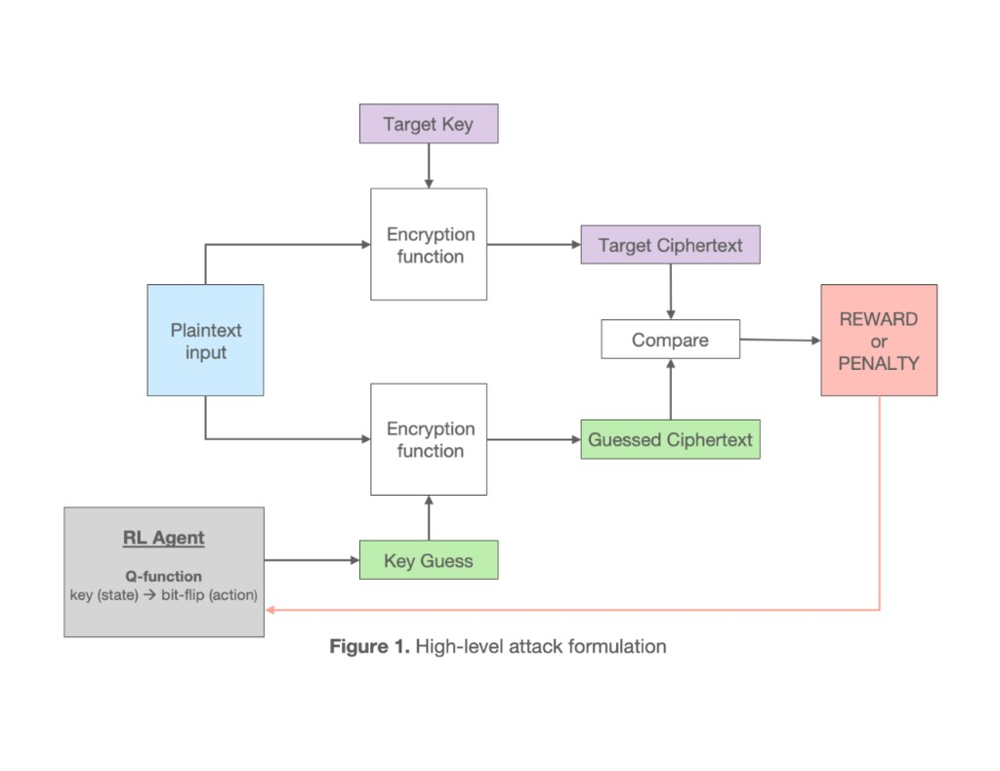
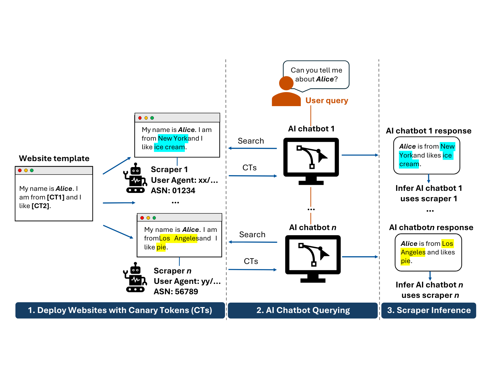
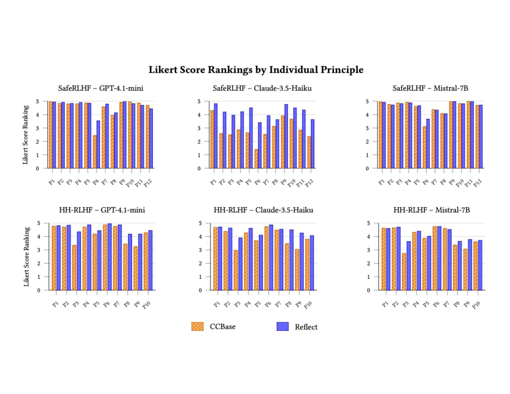
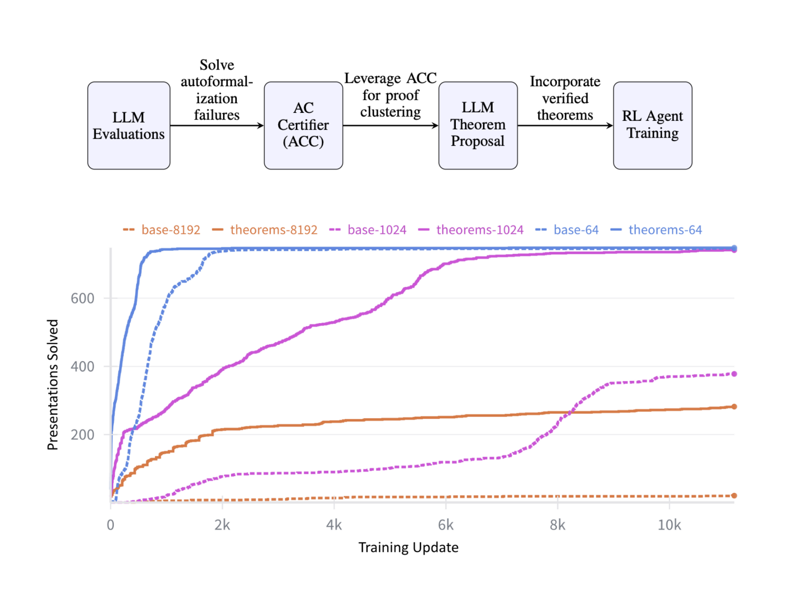

 ReLAES: A First Look at Reinforcement Learning based Cryptanalysis of AES Shraddha Hardikar, Caroline Zhang, Nirav Patel, Emily Wenger USENIX Security Symposium Posters 2026.
 Identifying AI Web Scrapers Using Canary Tokens Steven Seiden, Triss Ren, Caroline Zhang, Taein Kim, Enze Liu, Emily Wenger Accepted to the ACM Conference on Computer and Communications Security (CCS) 2026
 Reflect: Transparent Principle-Guided Reasoning for Constitutional Alignment at Scale Henry Bell, Caroline Zhang, Mohammed Mobasserul Haque, Samia Zaman, Dhaval Potdar, Brandon Fain Published at FAccT '26: The 2026 ACM Conference on Fairness, Accountability, and Transparency
 AI-Driven Mathematical Discovery for the Andrews–Curtis Conjecture Caroline Zhang, Aaron Zhou, Robert Joseph George, Sergei Gukov, Anima Anandkumar Published at The 5th Workshop on Mathematical Reasoning and AI at NeurIPS 2025